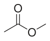

methyl-acetate

Definition: Methyl acetate, also known as MeOAc, acetic acid methyl ester or methyl ethanoate, is a carboxylate ester with the formula CH3COOCH3. It is a flammable liquid with a characteristically pleasant smell reminiscent of some glues and nail polish removers. Methyl acetate is occasionally used as a solvent, being weakly polar and lipophilic, but its close relative ethyl acetate is a more common solvent being less toxic and less soluble in water. Methyl acetate has a solubility of 25% in water at room temperature. At elevated temperature its solubility in water is much higher. Methyl acetate is not stable in the presence of strong aqueous bases or aqueous acids. Methyl acetate is not considered a VOC in the USA.
Source: Wikipedia
Wikipedia Page (Something wrong with this association? Let us know.)
Wikidata Page (Something wrong with this association? Let us know.)